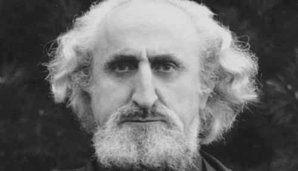

André is a young European who left his decaying country in 2012 for greener pastures. He enjoys exploring subterranean places, reading about a host of interconnected topics, and yearns for Tradition.


I would go to the end of the world, I would dye my hair blond, if you asked me
I would betray my country, I would reject my friends, if you asked me
—Edith Piaf, Hymne à l’amour
Most evolved societies in history, from pre-Columbian far West to Japanese far East, are patriarchal. This means that men and women are recognized specific, complementary roles to play. The role of women consists, mainly, in being loving and nurturing: it is oriented towards family, husband, children…
These roles are far from arbitrary. They stem out of the inner nature of each sex. Whether they come from an evolutionary process rewarding complementarism between agents or from immutable metaphysical essences—ever heard about the Purusha and Prakriti?—the natural processes behind them are confirmed by game experience. Women want to mate with dominant males, are attracted to power, money, and sheer alphaness. Just think about the magical pussy-magnet effect of uniforms.
Beta males and nice guys are despised for not taking risks, not defending their dignity and letting themselves get used by manipulative girls or disrespectful authority. Men who position themselves as being no threat are at best relegated into the dreaded friendzone, at worst utterly despised. But alpha males—or those who can mimic them—meet with a very different response. Namely, interest, respect, and even love.
Sure, a lot of girls today are too flimsy to maintain a long-standing interest in any man and too narcissistic to really respect anyone but themselves. But there are also many girls who, even if they genuinely believe in the feminist dogmas of the day, have their natural processes preserved enough to be capable of commitment for a dominant man.
These girls are those most playing men are interested into. We sometimes force our spontaneous ways to hook with these modern-but-still-longing-for-a-true-man girls. Bad boy types get them easily but squander their girl capital by their inconstant, violent, and overall repulsive behaviour. On the other hand, some rare men are able to not only gain girls’ interest, but also to maintain it and even raise it to the highest heights, where girls have ceased to be interested or loving but turned into worshippers and devotees of their male. This is the highest level of game—when one manages to be worshipped by his conquests and wrap several of them around one’s finders without problems. Here are some men who managed to cling to these heights.
Advertising himself as “the Italian stallion,” Rocco Siffredi is much more than a usual porn actor. A 52 years old, he claims to have “worked with” no less than 5000 girls. Equipped with a 9-inch dick, he managed to get most of these girls consent to receive his gear in the ass at a time when anal was much less practiced than today. His stamina, passion for rough sex and custom to enlarge girly anuses brought him a global fame no other porn actor can par with.
A legend to fappers, Rocco is beloved by many girls as well. Porn actress Jewel De’nyle said she waited four years for Rocco to come to North America. English actress Kelly Stafford drank his piss. Various actresses gladly had their heads basked in the toilet as Rocco was ramming their asses, including one who got stitches over the anus as a result and did not sue him. An actress reported how she vomited on another girl because she thought that Rocco wanted her to do so:
Looking deeply into my eyes Rocco murmured in his commanding voice “I want you to vomit all over her face”, all the while forcing his fingers deeper down my throat. Vomit? Ok, I wasn’t expecting that, but Rocco wants he gets. Who am I to say no? It wasn’t hard, his fingers were so far my throat the vomit came up easily. I leaned over and heaved bits of bagel and apple juice all over Ashley’s upturned face.
The same testimony speaks of five minutes with Rocco on a tone so exalted it can be considered as worship:
I only got around 5 minutes on Rocco’s magic penis, but it was everything I had hoped for and more… I desperately hung onto the nearest wall with what little muscle control I had left while Rocco did his best to fuck me to death. Gurgled sounds bubbled out of me. I couldn’t tell where the camera was, I could not act or pose… My brain was goo. [Rocco] only operates at one speed—destroy. It was epic. I couldn’t remember my name, I could hardly even stand.I want more. I NEED more. That magic man is addictive as hell.
Another actress, aware of Rocco’s reputation to bask down heads in toilets, was not the least shocked but, on the contrary, willing that the “Italian stallion” put her head down as well.
Séligny with one of his devotees
Born a few times before the first World War, Paul de Séligny was a Frenchman interested into spiritual traditionalism. He joined an esoteric Muslim (Sufi) order in Morocco in 1939 or 40. After twenty years living there, Séligny was asked by another Frenchman, Jean-Victor Hocquard, if he could guide him into the rediscovery of Tradition through Sufism. It is seemingly at this moment that Séligny’s life soared, revealing him, perhaps not as a saint or true spiritual guide, but at least as a very charming leader.
When Séligny created his own Sufi group to answer Hocquard’s demand, he quickly used it as a place for personal entrepreneurship. Indeed, he was not long moving his group from Morocco to the wealthy city of Monaco, then created a journal named Je suis (“I am”) targeting the young, managed to buy a yacht boat, and created a company of private lessons for post-high school students.
According to historian Mark Sigdwick, Séligny managed to extract a lot of money from his followers. He had a taste for luxurious cars and champagne. His ways to make bucks had him expelled from Monaco, but the incident did not create any problem to his followers: they accompanied him down the French Riviera, where he maintained his luxurious lifestyle. He banged his friend Hocquard’s daughter as well as many girls who went to him either for classes or “spiritual” activities.
One of them, a daughter of diplomats, loved him enough to ask her parents for money and expensive goods that she immediately gave to Séligny. She once received a new car from her parents and sold it to give the money to her lover. As she was underage, her father got her back at home, but once she turned 21, she flew back to Séligny to resume her affair with him.
Overall, Séligny managed to maintain various affairs at the same time, each girl being aware of the others. He was hardly a true spiritual guide but his feats with girls and followers were impressive.
Elie Yaffa, as a real name, is basically a “French” version of 50 Cent. Spotted by the show-business industry for his raps and small-scale ghetto fame, he enjoyed an important radio promotion and distribution. And whereas political correctness oppresses us, this race-mixed guy was able to rap things like “shut your big mouth, go make me a steak-fries, you gave me a headache, I’m on the verge to smack you” (Killer) or “there are bitches everywhere ‘cuz I’m in the place, and if it hurts, if you’re shouting, if you’re coming, that’s because I’m in your pussy” (Jour de paye) without being hunted down by SJWs.
Arrogant, muscular, pretending to be immensely rich (there are controversies over how much he really owns), Booba has been pedestalized by girls of North African origin, to the point that men of the same origin resent him for fucking their “sisters.” Many beurettes, as these girls are commonly referred to in France, have turned into the kind of “bitches” Booba talked about, by running after blacks with enough money to pay for champagne in clubs, giving them their pussy, and sometimes keeping the bastard children they got as a result.
Moderately appreciated by some for his raps talents, idolized by “swaggy” girls, Booba is also perceived as either a male whore who overplays virility but is actually a globalist puppet in charge of promoting race-mixing and crime, or as a giant asshole abusing his position to bed and disrespect girls. In any case, Booba has been pedestalized by many girls and doubtlessly helped a lot of thuggish Blacks to appear desirable. His alphaness is partly artificial, just like his juice-grown muscles, but it works.

Unlike Séligny, Fritjof Schuon is one of these guys whom we can assume to have had a deep knowledge of spirituality. A traditionalist as well, Schuon has been one of the first Muslim Sufis in Europe—he was drawn to Sufism during a quest for esoteric initiation—and wrote dozens of books about metaphysics and religions, including the milestone Transcendent Unity of Religions. Together with other traditionalists, Schuon helped to spawn a Sufi center in Basil, Switzerland, which he eventually took over. Under his leadership, the Sufi center evolved into an international order called Maryamiyya, a name referring to the order’s recognition of the Holy Virgin.
At 73, Schuon left Europe to Bloomington, Indiana, where he created a new religious community. Relocating at this age was already an impressive feat—but more impressive was Schuon’s interest shifting towards women. In Bloomington, he managed to “marry” several women, which is allowed by the Islamic law but unlikely for someone who was born a European. At least two of these women were already married with male followers, yet accepted to be given to their guru. Schuon was also prosecuted for child molestation when a disgruntled follower revealed that he organized dinners in which he allegedly touched teenage girls. It is controversial whether his touching was sexual or not. Nonetheless, he was revered as a living saint, both inside and outside his own community, and his works contain genuine metaphysical nuggets.
Can a man who is busy banging several women ask at least some of them to accept the other girls? If the answer is yes, be the man a pornstar, a musician, a community leader or someone able to wife several women at once, then he has reached the highest levels of game. Such a man’s competition ranges from rare to nonexistent. Only a woman who worships a man can tolerate him to bang other girls and even be glad that he deigns to bang her too.
Some say that “forbidden patterns” of game—known as October Man, Fractionalism, and other stuff based on NLP—may achieve similar results. Perhaps it is true. As far as I’m concerned, I never felt the need to use these in game and consequently have no first-person experience on the topic. However, I would advise those interested into having women running at their feet that these matters may be tricky. A devoted woman who may accept anything minus one, say, being set aside for a cuter or younger one, can shift from devotion to tenacious hatred, so be careful.
Read Next: Why Studying World Religions For Masculine Advice Is No Blasphemy